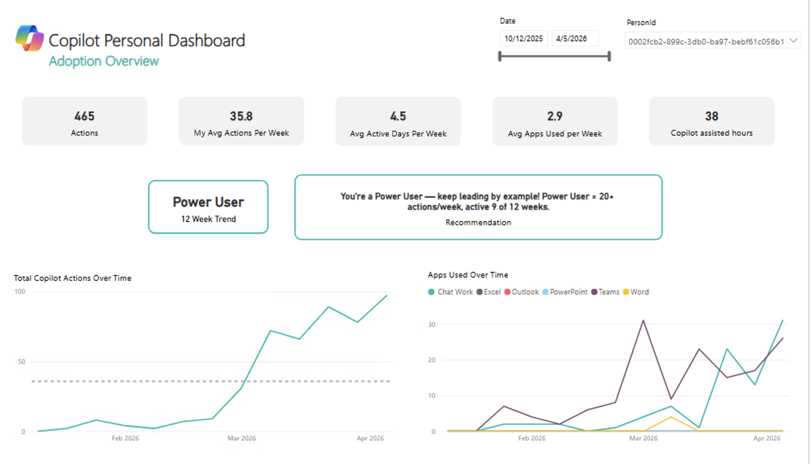
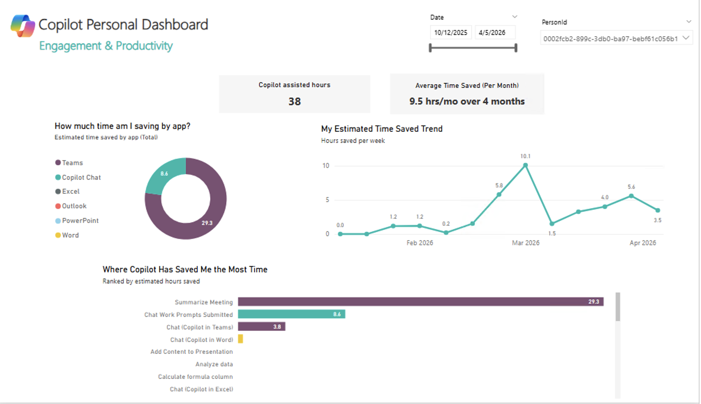
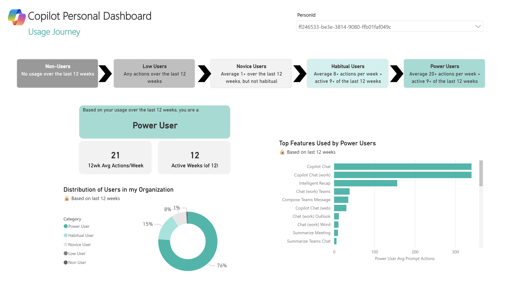
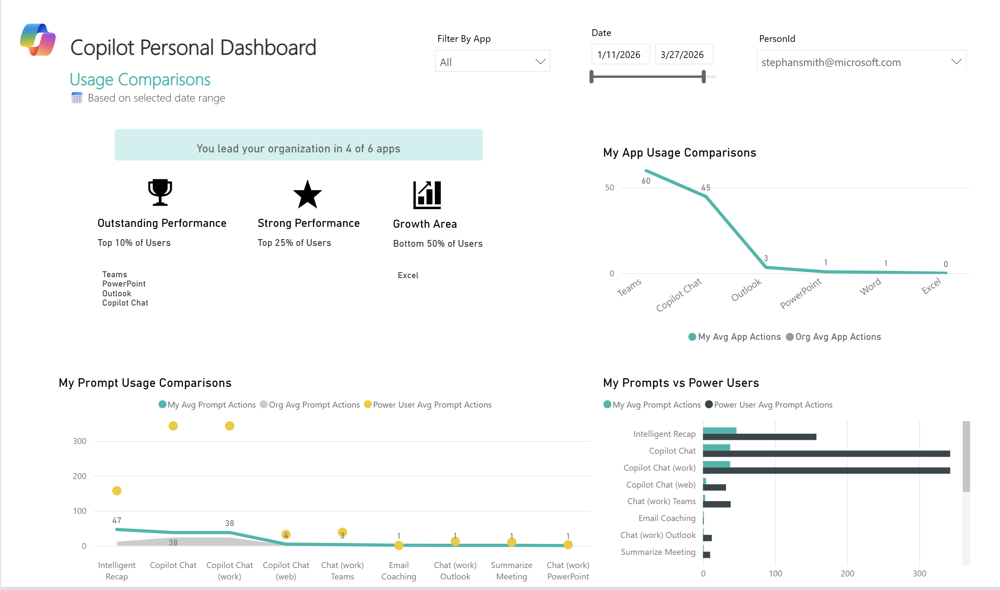

Track your Microsoft 365 Copilot usage, measure time saved, and compare your engagement against your organization — all in one Power BI report.
Four interactive tabs that give you a complete picture of your Copilot adoption, productivity gains, usage journey, and standing within your organization.




Make sure you have the following before getting started.
Required to generate usage data
Analyst Workbench for person queries
The report needs a consistent, unique user ID. Best practice: upload a custom attribute using each user’s work email as PersonId so activity maps correctly.
MS Learn — Prepare organizational data (custom attributes)
To enable identifiable reporting, upload a custom attribute with work email as the unique PersonId.
Follow these steps to export your Copilot usage data from Viva Insights and connect it to the Power BI template.
Open the Viva Insights Analyst Workbench and create a Person Query with the following settings:
Go to analysis.insights.cloud.microsoft and click "Analysis results" in the left sidebar.
Click "Create analysis" → select "Person query" → click "Set up analysis".
Under the Microsoft 365 Copilot category, select "All metrics".
Key metrics that power this dashboard:
| Metric | Used For |
|---|---|
| Copilot assisted hours | Total time saved KPI |
| Total Copilot actions taken | Adoption overview & trends |
| Copilot actions taken in [App] | Per-app breakdown |
| Total Meeting hours summarized or recapped | Teams time saved calculation |
| Intelligent recap actions taken | Meeting recap tracking |
| Days of active Copilot usage in [App] | Consistency & active days |
Choose your data connection method:
📁 CSV Import Template — Viva Insights Personal Dashboard V7 (CSV Import pbit) — Import from an exported CSV file
🔗 Direct Query Template — Viva Insights Personal Dashboard V7 Direct Link Template — Connect directly to Viva Insights API using Partition ID & Query ID
Double-click the .pbit file. Power BI Desktop will launch and prompt you for your data source connection.
CSV Import: When prompted, enter the file path to your exported CSV.
Direct Query: When prompted, enter your Partition ID and Query ID from the Viva Insights person query.
Use the PersonId slicer to filter the report to your own data.
If you want users to only see their own data when viewing the published report, configure RLS in Power BI Desktop and Power BI Service:
ViewOwnData).PersonId and add the DAX filter:[PersonId] = USERPRINCIPALNAME()
ViewOwnData role.Note: USERPRINCIPALNAME() typically resolves to the user's email; ensure PersonId values match that format.
To access from your browser, publish to Power BI Service via File → Publish → select your workspace.
The dashboard uses Microsoft's estimated time savings methodology.
6 min
Each Copilot action (drafting an email, summarizing a chat, creating a formula, etc.) saves an estimated 6 minutes.
Actual Duration
Meeting summaries and Intelligent Recap count the actual meeting length as time saved, not a flat estimate.
The Equation
Copilot Assisted Hours =
Meeting hours recapped/summarized
+ (Non-meeting action count × 6 min)
Use the date slider at the top of each tab to filter by the last 4 weeks, last quarter, or any custom range.
This report refreshes weekly — timing may vary by your organizational configuration.
Always use the PersonId slicer to make sure you're viewing your own data.
Key terms used throughout the dashboard.
Common issues and how to fix them.
| Symptom | Cause | Fix |
|---|---|---|
| Blank visuals | Missing required metric(s) | Re-run query with all Microsoft 365 Copilot metrics selected |
| Missing slicers/labels | Skipped Org or FunctionType attribute | Add both attributes and reprocess |
| Trend calculations broken | Grouped by Month instead of Week | Use Week grouping in query settings |
| Partial weeks of data | Exported before query finished | Wait until Status = Completed |
| Load error in Power BI | CSV file open in Excel | Close the file and retry |